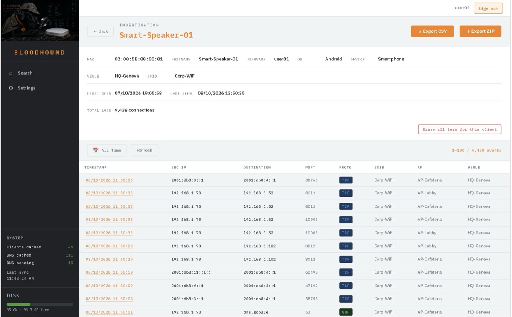

Bloodhound
By Frederic Muffat-Es-Jacques
WiFi network investigation platform for Ruckus infrastructure. Bloodhound ingests and enriches syslog/flow logs from Ruckus WiFi deployments (Ruckus One, Unleashed, or SmartZone), letting you investigate client activity across your wireless network: who connected, when, from where, to what destination, and on which SSID/AP/venue.
Key features
- Multi-platform support — Ruckus One (cloud), Unleashed, and SmartZone, with mutually exclusive platform selection (one active at a time, all configurations preserved for easy switching)
- Flow log investigation — search by client, MAC, IP, SSID, AP, venue, protocol, port, and more, with a per-client investigation view showing full connection history
- Client identity enrichment — hostname, OS, device type, username, and guest/sponsor information automatically merged into each log entry
- User accounts — administrators, logs managers (search, export, erase client logs, retention/purge — no server administration) and read-only users, managed in Settings → Users
- Per-client erasure — delete all logs and history of one client, with password confirmation and an audit trail
- Encrypted exports — AES-256 password-protected ZIP, or CSV, for sharing investigation results
Featured in The RUCKUS Vibe, October 2026.